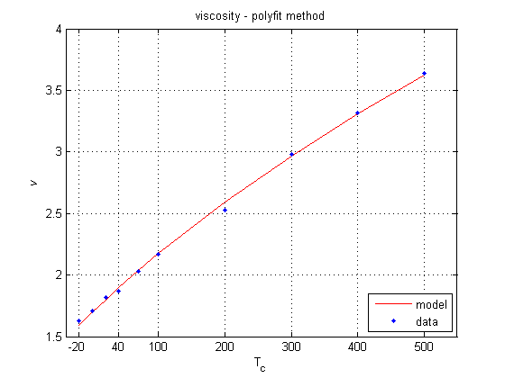
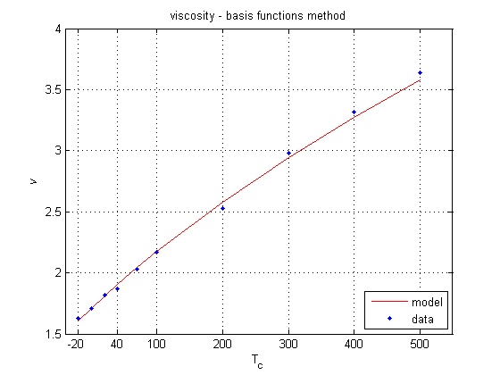
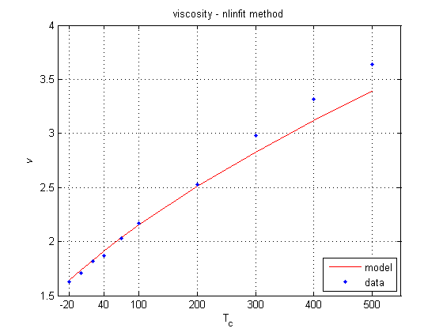

Corentin Rejaud, Recitation Week 11
Contents
Question 1
Part A
clear all; Tci = [-20, 0, 20, 40, 70, 100, 200, 300, 400, 500]; Ti = Tci + 273.15; vi = [1.63, 1.71, 1.82, 1.87, 2.03, 2.17, 2.53, 2.98, 3.32, 3.64]; y1 = Ti.^(3/2) ./ vi; x1 = Ti; C = polyfit(x1, y1, 1); a1 = C(1) b1 = C(2) v = @(T) T.^(3/2) ./ (a1.*T + b1); figure; plot(Tci, v(Ti), 'r-', Tci, vi, 'b.'); title('viscosity - polyfit method'); xlabel('T_{c}'); ylabel('\it{v}'); xlim([-40 550]); ylim([1.5 4]); set(gca, 'xtick', [-20, 40, 100, 200, 300, 400, 500]); set(gca, 'ytick', [1.5:.5:4]); grid on; legend('model', 'data', 'location', 'se'); % Part B A = [Ti.^(-1/2)' , Ti.^(-3/2)']; Y = (1./vi)'; p = A\Y a2 = p(1) b2 = p(2) v = @(T) T.^(3/2) ./ (a2.*T + b2); figure; plot(Tci, v(Ti), 'r-', Tci, vi, 'b.'); title('viscosity - basis functions method'); xlabel('T_{c}'); ylabel('\it{v}'); xlim([-40 550]); ylim([1.5 4]); set(gca, 'xtick', [-20, 40, 100, 200, 300, 400, 500]); set(gca, 'ytick', [1.5:.5:4]); grid on; legend('model', 'data', 'location', 'se'); % Part C f = @(c,T) T.^(3/2) ./ (c(1).*T + c(2)); ce = [6.5 870.5]; rng(201); yi = f(ce,Ti) + 0.2*randn(size(Ti)); c0 = [6 870]'; c = nlinfit(Ti, yi, f, c0); a3 = c(1) b3 = c(2) v = @(T) T.^(3/2) ./ (a3.*T + b3); figure; plot(Tci, v(Ti), 'r-', Tci, vi, 'b.'); title('viscosity - nlinfit method'); xlabel('T_{c}'); ylabel('\it{v}'); xlim([-40 550]); ylim([1.5 4]); set(gca, 'xtick', [-20, 40, 100, 200, 300, 400, 500]); set(gca, 'ytick', [1.5:.5:4]); grid on; legend('model', 'data', 'location', 'se'); % Part D a = [a1, a2, a3]; b = [b1, b2, b3]; S = {'polyfit', 'basis functions', 'nlinfit'} fprintf(' a b method\n'); fprintf('------------------------------------\n'); for i=1:3, fprintf(' %6.4f %8.4f %s \n', a(i), b(i), S{i}); end
a1 =
6.5443
b1 =
871.2282
p =
6.7469
795.1066
a2 =
6.7469
b2 =
795.1066
a3 =
7.4931
b3 =
553.4282
S =
'polyfit' 'basis functions' 'nlinfit'
a b method
------------------------------------
6.5443 871.2282 polyfit
6.7469 795.1066 basis functions
7.4931 553.4282 nlinfit
   Question 2
clear all; h = [0 8 16 24 32 40]; r = [1.2250 0.5258 0.1665 0.0469 0.0136 0.0040]; P = [101325.00 35651.62 10352.83 2971.75 889.06 287.14]; T = [288.15 236.22 216.65 220.56 228.49 250.35]; hi = 0:4:40; ri= interp1(h, r, hi); Pi= interp1(h, P, hi); Ti= interp1(h, T, hi); fprintf(' h rho P T\n'); fprintf('(km) (kg/m^3) (Pa) (K)\n'); fprintf('----------------------------------\n'); fprintf(' %2.0f %6.4f %9.2f %6.2f\n', [hi; ri; Pi; Ti]);
h rho P T (km) (kg/m^3) (Pa) (K) ---------------------------------- 0 1.2250 101325.00 288.15 4 0.8754 68488.31 262.19 8 0.5258 35651.62 236.22 12 0.3462 23002.23 226.44 16 0.1665 10352.83 216.65 20 0.1067 6662.29 218.61 24 0.0469 2971.75 220.56 28 0.0302 1930.41 224.53 32 0.0136 889.06 228.49 36 0.0088 588.10 239.42 40 0.0040 287.14 250.35
Question 3
clear all; M = [1 3 5 7 9 12] Y = [1971 1973 1975] T = [27.0 40.1 61.4 77.8 71.6 40.8 35.5 46.4 59.5 77.4 69.5 39.0 37.3 40.2 65.8 75.8 64.2 35.9] mi = [1 2 3 4 5 6 7 8 9 10 11 12]; yi = [1971 1972 1973 1974 1975]; [Mi, Yi] = meshgrid(mi, yi); Ti = interp2(M,Y,T,Mi,Yi) fprintf('year jan feb mar apr may jun jul aug sep oct nov dec \n'); fprintf('----------------------------------------------------------------------------\n'); fmt = ['%4.0f', repmat(' %4.1f',1,12),'\n']; fprintf(fmt, [yi', Ti]'); fprintf('\n'); Ti1 = interp1(Y, T, yi); fprintf('year jan feb mar apr may jun jul aug sep oct nov dec \n'); fprintf('----------------------------------------------------------------------------\n'); % fmt = '%4.0f %4.1f %4.1f %4.1f %4.1f %4.1f %4.1f\n'; fprintf('%4.0f %4.1f %4.1f %4.1f %4.1f %4.1f %4.1f\n', [yi', Ti1]'); Ti2 = interp1(M, Ti1', mi); Ti2 = Ti2'; fprintf('\n'); fprintf('year jan feb mar apr may jun jul aug sep oct nov dec \n'); fprintf('----------------------------------------------------------------------------\n'); fmt = ['%4.0f', repmat(' %4.1f',1,12),'\n']; fprintf(fmt, [yi', Ti2]');
M =
1 3 5 7 9 12
Y =
1971 1973 1975
T =
27.0000 40.1000 61.4000 77.8000 71.6000 40.8000
35.5000 46.4000 59.5000 77.4000 69.5000 39.0000
37.3000 40.2000 65.8000 75.8000 64.2000 35.9000
Ti =
Columns 1 through 7
27.0000 33.5500 40.1000 50.7500 61.4000 69.6000 77.8000
31.2500 37.2500 43.2500 51.8500 60.4500 69.0250 77.6000
35.5000 40.9500 46.4000 52.9500 59.5000 68.4500 77.4000
36.4000 39.8500 43.3000 52.9750 62.6500 69.6250 76.6000
37.3000 38.7500 40.2000 53.0000 65.8000 70.8000 75.8000
Columns 8 through 12
74.7000 71.6000 61.3333 51.0667 40.8000
74.0750 70.5500 60.3333 50.1167 39.9000
73.4500 69.5000 59.3333 49.1667 39.0000
71.7250 66.8500 57.0500 47.2500 37.4500
70.0000 64.2000 54.7667 45.3333 35.9000
year jan feb mar apr may jun jul aug sep oct nov dec
----------------------------------------------------------------------------
1971 27.0 33.5 40.1 50.8 61.4 69.6 77.8 74.7 71.6 61.3 51.1 40.8
1972 31.3 37.3 43.3 51.9 60.5 69.0 77.6 74.1 70.5 60.3 50.1 39.9
1973 35.5 41.0 46.4 53.0 59.5 68.5 77.4 73.5 69.5 59.3 49.2 39.0
1974 36.4 39.9 43.3 53.0 62.6 69.6 76.6 71.7 66.8 57.0 47.3 37.5
1975 37.3 38.8 40.2 53.0 65.8 70.8 75.8 70.0 64.2 54.8 45.3 35.9
year jan feb mar apr may jun jul aug sep oct nov dec
----------------------------------------------------------------------------
1971 27.0 40.1 61.4 77.8 71.6 40.8
1972 31.3 43.3 60.5 77.6 70.5 39.9
1973 35.5 46.4 59.5 77.4 69.5 39.0
1974 36.4 43.3 62.6 76.6 66.8 37.5
1975 37.3 40.2 65.8 75.8 64.2 35.9
year jan feb mar apr may jun jul aug sep oct nov dec
----------------------------------------------------------------------------
1971 27.0 33.5 40.1 50.8 61.4 69.6 77.8 74.7 71.6 61.3 51.1 40.8
1972 31.3 37.3 43.3 51.9 60.5 69.0 77.6 74.1 70.5 60.3 50.1 39.9
1973 35.5 41.0 46.4 53.0 59.5 68.5 77.4 73.5 69.5 59.3 49.2 39.0
1974 36.4 39.8 43.3 53.0 62.6 69.6 76.6 71.7 66.8 57.1 47.3 37.5
1975 37.3 38.8 40.2 53.0 65.8 70.8 75.8 70.0 64.2 54.8 45.3 35.9
Extra Question
Part A
clear all; N = 120; y0 = 100000; x = 1000; eq1 = @(r) (1+r).^N - x./(x - r.*y0); r = fzero(eq1, 6/1200) % Part B y(1) = y0; iTotal = 0; for k = 2:N+1, y(k) = (1+r)*y(k-1)-x; i(k-1) = r*y(k-1); iTotal = i(k-1) + iTotal; end i(k) = r*y(k); iTotal = i(k) + iTotal; pTotal = iTotal + y0; k = 1:N+1; fprintf(' n y(k) interest\n'); fprintf('---------------------------\n'); for k = 1:N+1; fprintf('%3.0f %9.2f %6.2f\n', [k, y(k), i(k)]); end fprintf('---------------------------\n'); fprintf(' total interest: %8.2f\n', iTotal); fprintf(' total payments: %9.2f\n', pTotal); % Part C r = 6/1200; eq2 = @(N) (1+r).^N - x./(x - r.*y0); N = fzero(eq2, 120); N = ceil(N) y2(1) = y0; k = 2; i2Total = 0; while 1, y2(k) = (1+r)*y2(k-1)-x; i2(k-1) = r*y2(k-1); i2Total = i2(k-1) + i2Total; k = k + 1; if k == N+2, break; end end i2(N+1) = r*y2(N+1); i2Total = i2(N+1) + i2Total; p2Total = i2Total + y0; k = 1:N+1; fprintf(' n y(k) interest\n'); fprintf('---------------------------\n'); for k = 1:N+1; fprintf('%3.0f %9.2f %6.2f\n', [k, y2(k), i2(k)]); end fprintf('---------------------------\n'); fprintf(' total interest: %8.2f\n', i2Total); fprintf(' total payments: %9.2f\n', p2Total);
r =
0.0031
n y(k) interest
---------------------------
1 100000.00 311.42
2 99311.42 309.27
3 98620.69 307.12
4 97927.81 304.97
5 97232.78 302.80
6 96535.58 300.63
7 95836.21 298.45
8 95134.66 296.27
9 94430.93 294.08
10 93725.00 291.88
11 93016.88 289.67
12 92306.55 287.46
13 91594.01 285.24
14 90879.25 283.01
15 90162.27 280.78
16 89443.05 278.54
17 88721.59 276.30
18 87997.88 274.04
19 87271.93 271.78
20 86543.71 269.51
21 85813.22 267.24
22 85080.46 264.96
23 84345.41 262.67
24 83608.08 260.37
25 82868.45 258.07
26 82126.52 255.76
27 81382.28 253.44
28 80635.71 251.11
29 79886.83 248.78
30 79135.61 246.44
31 78382.05 244.10
32 77626.15 241.74
33 76867.89 239.38
34 76107.27 237.01
35 75344.28 234.64
36 74578.92 232.25
37 73811.17 229.86
38 73041.03 227.46
39 72268.50 225.06
40 71493.55 222.64
41 70716.20 220.22
42 69936.42 217.79
43 69154.22 215.36
44 68369.57 212.92
45 67582.49 210.46
46 66792.95 208.01
47 66000.96 205.54
48 65206.50 203.06
49 64409.56 200.58
50 63610.15 198.09
51 62808.24 195.60
52 62003.84 193.09
53 61196.93 190.58
54 60387.51 188.06
55 59575.56 185.53
56 58761.09 182.99
57 57944.09 180.45
58 57124.53 177.90
59 56302.43 175.34
60 55477.77 172.77
61 54650.53 170.19
62 53820.73 167.61
63 52988.33 165.02
64 52153.35 162.42
65 51315.76 159.81
66 50475.57 157.19
67 49632.76 154.57
68 48787.33 151.93
69 47939.26 149.29
70 47088.55 146.64
71 46235.19 143.98
72 45379.18 141.32
73 44520.50 138.64
74 43659.14 135.96
75 42795.10 133.27
76 41928.37 130.57
77 41058.95 127.87
78 40186.81 125.15
79 39311.96 122.42
80 38434.39 119.69
81 37554.08 116.95
82 36671.03 114.20
83 35785.23 111.44
84 34896.67 108.67
85 34005.34 105.90
86 33111.24 103.11
87 32214.36 100.32
88 31314.68 97.52
89 30412.20 94.71
90 29506.91 91.89
91 28598.80 89.06
92 27687.86 86.23
93 26774.08 83.38
94 25857.46 80.52
95 24937.99 77.66
96 24015.65 74.79
97 23090.44 71.91
98 22162.35 69.02
99 21231.37 66.12
100 20297.48 63.21
101 19360.69 60.29
102 18420.99 57.37
103 17478.35 54.43
104 16532.78 51.49
105 15584.27 48.53
106 14632.80 45.57
107 13678.37 42.60
108 12720.97 39.62
109 11760.58 36.62
110 10797.21 33.62
111 9830.83 30.62
112 8861.45 27.60
113 7889.04 24.57
114 6913.61 21.53
115 5935.14 18.48
116 4953.62 15.43
117 3969.05 12.36
118 2981.41 9.28
119 1990.70 6.20
120 996.90 3.10
121 -0.00 -0.00
---------------------------
total interest: 20000.00
total payments: 120000.00
N =
139
n y(k) interest
---------------------------
1 100000.00 500.00
2 99500.00 497.50
3 98997.50 494.99
4 98492.49 492.46
5 97984.95 489.92
6 97474.87 487.37
7 96962.25 484.81
8 96447.06 482.24
9 95929.30 479.65
10 95408.94 477.04
11 94885.99 474.43
12 94360.42 471.80
13 93832.22 469.16
14 93301.38 466.51
15 92767.89 463.84
16 92231.73 461.16
17 91692.88 458.46
18 91151.35 455.76
19 90607.11 453.04
20 90060.14 450.30
21 89510.44 447.55
22 88957.99 444.79
23 88402.78 442.01
24 87844.80 439.22
25 87284.02 436.42
26 86720.44 433.60
27 86154.04 430.77
28 85584.81 427.92
29 85012.74 425.06
30 84437.80 422.19
31 83859.99 419.30
32 83279.29 416.40
33 82695.69 413.48
34 82109.17 410.55
35 81519.71 407.60
36 80927.31 404.64
37 80331.95 401.66
38 79733.61 398.67
39 79132.28 395.66
40 78527.94 392.64
41 77920.58 389.60
42 77310.18 386.55
43 76696.73 383.48
44 76080.21 380.40
45 75460.61 377.30
46 74837.92 374.19
47 74212.11 371.06
48 73583.17 367.92
49 72951.08 364.76
50 72315.84 361.58
51 71677.42 358.39
52 71035.81 355.18
53 70390.98 351.95
54 69742.94 348.71
55 69091.65 345.46
56 68437.11 342.19
57 67779.30 338.90
58 67118.19 335.59
59 66453.79 332.27
60 65786.05 328.93
61 65114.98 325.57
62 64440.56 322.20
63 63762.76 318.81
64 63081.58 315.41
65 62396.98 311.98
66 61708.97 308.54
67 61017.51 305.09
68 60322.60 301.61
69 59624.21 298.12
70 58922.34 294.61
71 58216.95 291.08
72 57508.03 287.54
73 56795.57 283.98
74 56079.55 280.40
75 55359.95 276.80
76 54636.75 273.18
77 53909.93 269.55
78 53179.48 265.90
79 52445.38 262.23
80 51707.61 258.54
81 50966.14 254.83
82 50220.97 251.10
83 49472.08 247.36
84 48719.44 243.60
85 47963.04 239.82
86 47202.85 236.01
87 46438.87 232.19
88 45671.06 228.36
89 44899.42 224.50
90 44123.91 220.62
91 43344.53 216.72
92 42561.25 212.81
93 41774.06 208.87
94 40982.93 204.91
95 40187.85 200.94
96 39388.79 196.94
97 38585.73 192.93
98 37778.66 188.89
99 36967.55 184.84
100 36152.39 180.76
101 35333.15 176.67
102 34509.82 172.55
103 33682.37 168.41
104 32850.78 164.25
105 32015.03 160.08
106 31175.11 155.88
107 30330.98 151.65
108 29482.64 147.41
109 28630.05 143.15
110 27773.20 138.87
111 26912.07 134.56
112 26046.63 130.23
113 25176.86 125.88
114 24302.74 121.51
115 23424.26 117.12
116 22541.38 112.71
117 21654.09 108.27
118 20762.36 103.81
119 19866.17 99.33
120 18965.50 94.83
121 18060.33 90.30
122 17150.63 85.75
123 16236.38 81.18
124 15317.56 76.59
125 14394.15 71.97
126 13466.12 67.33
127 12533.45 62.67
128 11596.12 57.98
129 10654.10 53.27
130 9707.37 48.54
131 8755.91 43.78
132 7799.69 39.00
133 6838.69 34.19
134 5872.88 29.36
135 4902.24 24.51
136 3926.75 19.63
137 2946.39 14.73
138 1961.12 9.81
139 970.93 4.85
140 -24.22 -0.12
---------------------------
total interest: 38975.66
total payments: 138975.66